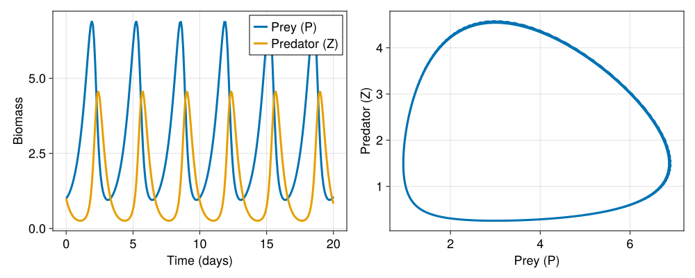

Implementing a custom biogeochemical model
As described in Implementing new models, there are two ways to extend OceanBioME with a new biogeochemical model using continuous tracers. This page covers the second approach: implementing a completely new model by subtyping AbstractContinuousFormBiogeochemistry directly from Oceananigans. This approach might be useful for simple models when the user wants full control. Note that individual-based models are distinct, and are covered in Individuals.
The continuous-form biogeochemistry interface
A continuous-form biogeochemical model must:
- Subtype
AbstractContinuousFormBiogeochemistry(exported fromOceananigans.Biogeochemistry). - Implement
required_biogeochemical_tracers, returning a tuple of the tracer names the model owns (e.g.(:P, :Z)). - Implement a tendency method with the fixed call signature
(bgc)(::Val{:tracer_name}, x, y, z, t, tracers...), which returns the biogeochemical reaction term for that tracer. Heretracers...is the value of every tracer inrequired_biogeochemical_tracers, in that order, supplied regardless of which tracer's tendency is being computed.
Optionally, a model may also implement:
required_biogeochemical_auxiliary_fields: a tuple of auxiliary field names needed (e.g.(:PAR,)); defaults to().biogeochemical_auxiliary_fields: aNamedTupleof the auxiliary fields themselves, if they are computed by the model rather than prescribed externally.biogeochemical_drift_velocity: an additional velocity field for a tracer (e.g. sinking); defaults tonothing.update_biogeochemical_state!: called once per time step to update any internal state (e.g. to recompute light attenuation); defaults to doing nothing.
This is a different, lower-level interface to the one used by NPD plankton components. NPD components use a discrete (i, j, k, grid, plankton, bgc, fields, auxiliary_fields) signature and only need to define four functions (nutrient_uptake, dissolved_waste, solid_waste, inorganic_waste); the framework then assembles these into tracer tendencies that automatically conserve nitrogen (or whichever currency the nutrients are tracked in). With AbstractContinuousFormBiogeochemistry there is no such bookkeeping: you write the full right-hand side for every tracer yourself, in continuous (x, y, z, t) form. This gives you complete freedom over the model structure, but also responsibility for ensuring conservation laws.
Example: Lotka-Volterra predator-prey model
Below, we illustrate how to use the continuous-form biogeochemistry interface by building a classic predator-prey model, solving the Lotka-Volterra equations. Note that here we let $P$ denote the biomass of a prey population (tracer P) and $Z$ denote the biomass of a predator population (tracer Z) since this can be thought of as a very simple phytoplankton/zooplankton model in the context of ocean biogeochemistry. The populations evolve according to the following equations:
\[\frac{\partial P}{\partial t} = \alpha P - \beta P Z,\]
\[\frac{\partial Z}{\partial t} = \delta\beta P Z - \gamma Z.\]
where the parameters are
| Symbol | Variable name | Description |
|---|---|---|
| $\alpha$ | prey_growth_rate | intrinsic growth rate of the prey population |
| $\beta$ | predation_rate | rate at which predators encounter and consume prey |
| $\delta$ | predator_efficiency | efficiency of converting consumed prey into predator growth |
| $\gamma$ | predator_death_rate | intrinsic death rate of the predator population |
Note that the two tracers are in whatever units you choose to measure biomass in, and nothing forces the two populations to conserve any quantity between them. In practice, the units of P and Z will be set by the initial conditions and the values of the parameters set by the user.
Imports
using OceanBioME, Oceananigans, CairoMakie
using Oceananigans.Units
using Oceananigans.Biogeochemistry: AbstractContinuousFormBiogeochemistry
import Oceananigans.Biogeochemistry: required_biogeochemical_tracersThe struct
We store the four rate parameters, and tell Oceananigans that this component owns the P (prey) and Z (predator) tracers. There are no auxiliary fields, so we don't need to define required_biogeochemical_auxiliary_fields (it defaults to ()).
@kwdef struct LotkaVolterra{FT} <: AbstractContinuousFormBiogeochemistry
prey_growth_rate :: FT = 1.5 / day # 1/s
predation_rate :: FT = 1.0 / day # 1/s
predator_efficiency :: FT = 1.0 # dimensionless
predator_death_rate :: FT = 3.0 / day # 1/s
end
required_biogeochemical_tracers(::LotkaVolterra) = (:P, :Z)Tracer tendencies
Now, we need to construct the equations for P and Z. This is done by creating functions that return the right-hand side (source-sink) terms for each tracer. Every continuous-form tendency method shares the same argument order (bgc, val_tracer_name, x, y, z, t, tracers...), with tracers... always supplied in the order given by required_biogeochemical_tracers, regardless of which tracer's tendency is being computed:
@inline function (bgc::LotkaVolterra)(::Val{:P}, x, y, z, t, P, Z)
α = bgc.prey_growth_rate
β = bgc.predation_rate
return α * P - β * P * Z
end
@inline function (bgc::LotkaVolterra)(::Val{:Z}, x, y, z, t, P, Z)
β = bgc.predation_rate
δ = bgc.predator_efficiency
γ = bgc.predator_death_rate
return δ * β * P * Z - γ * Z
endThe Biogeochemistry wrapper
Since the example above is implemented directly using AbstractContinuousFormBiogeochemistry, it can be dropped straight into a BoxModel (or any Oceananigans model) without using other features from OceanBioME. OceanBioME provides the Biogeochemistry constructor which adds four optional slots to the model:
light_attenuation: couples a light model and automatically exposes aPARauxiliary field.sediment: couples a benthic model that can capture sinking tracers and remineralise them back into the water column.particles: attaches Lagrangian particles (e.g. theslatissimakelp model) that interact two-way with the tracer fields.modifiers: post-processing hooks that run after tendencies or state updates, e.g.ScaleNegativeTracersto keep tracers non-negative.
The constructor is called using Biogeochemistry(model; light_attenuation, sediment, particles, modifiers). The constructor forwards all tendency calculations straight to the underlying model, so the use of the constructor doesn't change how the model equations are solved. If we don't want to add any of the optional components now, we can still pass the model to the constructor without any additional arguments, like
biogeochemistry = Biogeochemistry(LotkaVolterra())If you are using a spatial model (e.g. NonhydrostaticModel or HydrostaticFreeSurfaceModel), you could add a modifier to prevent negative values of P and Z:
biogeochemistry = Biogeochemistry(LotkaVolterra(); modifiers = ScaleNegativeTracers((:P, :Z)))Note that ScaleNegativeTracers operates on model.tracers, which works for spatial models like NonhydrostaticModel and HydrostaticFreeSurfaceModel, but it does not work with BoxModel, which stores its fields differently.
Running a box model
model = BoxModel(; biogeochemistry)
set!(model, P = 1.0, Z = 1.0)
simulation = Simulation(model; Δt = 10minutes, stop_time = 20days)
simulation.output_writers[:fields] = JLD2Writer(model, model.fields; filename = "box_lotka_volterra.jld2",
schedule = TimeInterval(2hours), overwrite_existing = true)
run!(simulation)[ Info: Initializing simulation...
┌ Warning: error ArgumentError("a group or dataset named grid is already present within this group") thrown when trying to serialize the grid at serialized/grid
└ @ Oceananigans.OutputWriters ~/.julia-oceananigans-gpu/packages/Oceananigans/9oDU5/src/OutputWriters/jld2_writer.jl:251
[ Info: ... simulation initialization complete (377.319 ms)
[ Info: Executing initial time step...
[ Info: ... initial time step complete (72.498 ms).
[ Info: Simulation is stopping after running for 1.024 seconds.
[ Info: Simulation time 20 days equals or exceeds stop time 20 days.And plot the result:
P_ts = FieldTimeSeries("box_lotka_volterra.jld2", "P")
Z_ts = FieldTimeSeries("box_lotka_volterra.jld2", "Z")
times = P_ts.times
fig = Figure(size = (1000, 400), fontsize = 18)
axT = Axis(fig[1, 1], ylabel = "Biomass", xlabel = "Time (days)")
lines!(axT, times / day, P_ts[1, 1, 1, :], linewidth = 3, label = "Prey (P)")
lines!(axT, times / day, Z_ts[1, 1, 1, :], linewidth = 3, label = "Predator (Z)")
axislegend(axT)
axP = Axis(fig[1, 2], xlabel = "Prey (P)", ylabel = "Predator (Z)")
lines!(axP, P_ts[1, 1, 1, :], Z_ts[1, 1, 1, :], linewidth = 3)
fig
The prey population grows until predation drives it down, the predator population then grows on the abundant prey until it depletes them and collapses, and the cycle repeats. This is the classic Lotka-Volterra limit cycle, visible as a closed loop in the phase-space plot (right panel).
Since AbstractContinuousFormBiogeochemistry models work with any Oceananigans model, the same LotkaVolterra struct could equally be dropped into a NonhydrostaticModel to study spatially-extended predator-prey dynamics (for example with advection and diffusion transporting each population), exactly as you would for any other Oceananigans tracer.
GPU support
LotkaVolterra only stores scalar FT (Float Type) parameters, so no Adapt.adapt_structure method is required to run it on a GPU. If your custom model stores array or field-valued parameters (for example a sinking velocity field), you will need to use Adapt to tell Julia how to transfer the model to the GPU. See the "GPU support" section of Implementing new models.